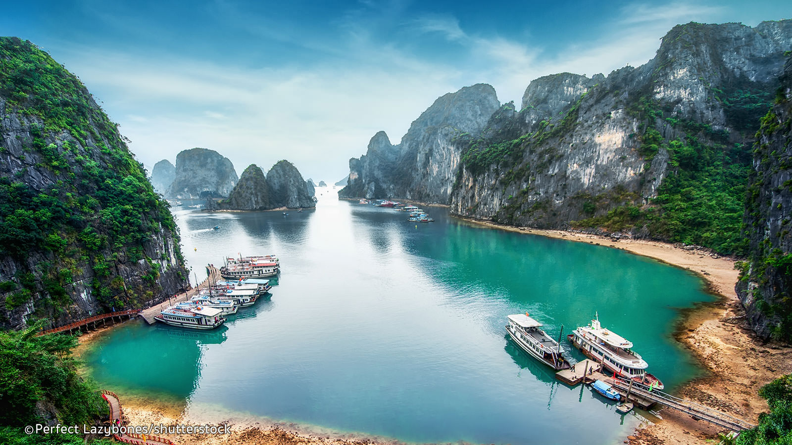

VỊNH HẠ LONG
Halong Bay is a beautiful natural wonder in northern Vietnam near the Chinese border.
The Bay is dotted with 1,600 limestone islands and islets and covers an area of over 1,500 sqkm.
This extraordinary area was declared a UNESCO World Heritage Site in 1994

Ha Long Bay has been called by the great national poet Nguyen Trai: "a marvel of the earth erected towards the high skies"
- Ban Sen, a thickly forested, almost uninhabited island reachable by ferries to Quan Lan from Cai Rong.
- Cat Ba, the home of the endangered cat: Ba langur, a national park, numerous caves and the most popular destination in Ha Long Bay for tourists.
- Quan Lạn, a historically significant outlying island with the beginnings of some tourism infrastructure and some beautiful beaches. Reachable by ferry from Cai Rong or also (reportedly) from Halong City.
- Van Don, a large island that is well inhabited, little visited by tourists and connected by road to the mainland near Cửa Ông.
- Dau Be Island: Visited by commercial cruises to Cat Ba. This is a very popular swimming and diving spot because of its rich coral and deep grottoes with three inland lakes. The grottoes and caves can only be visited by rowing boat at low tide, when access is possible.
- Dau Go Island: Visited by commercial cruises to Cat Ba. A large and heavily damaged cave plastered with multicoloured lights and concrete.